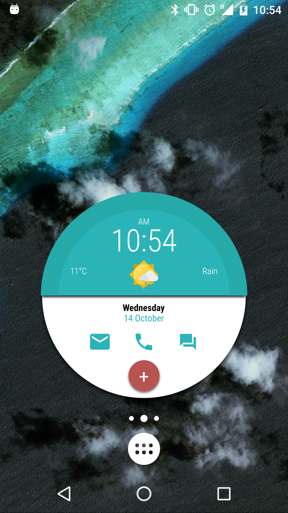
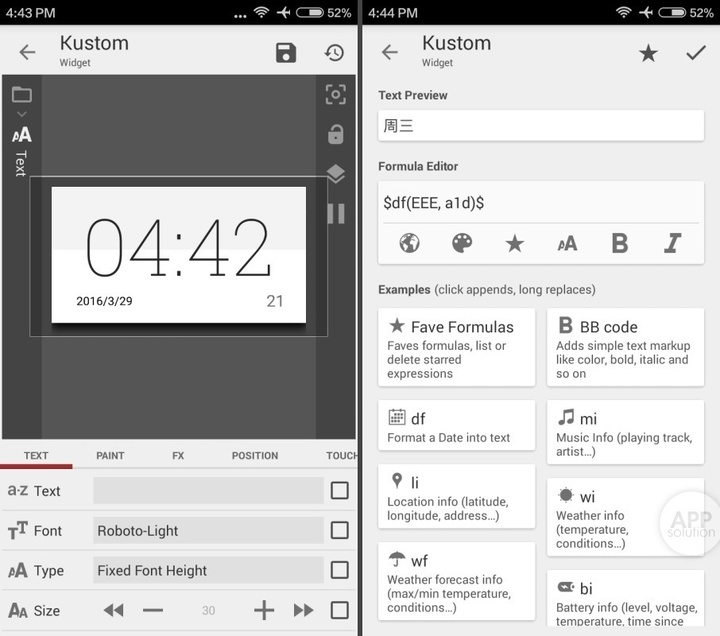

Kustom 进化史：从桌面小组件到 Android 个性化基础设施
kwgt 走过的路线，是一条把 Android 桌面"可玩性"逐层挖掘的路线——从最初的静态皮肤编辑器，演变成今天带函数引擎、插件生态、Pack 分发体系的完整平台。
现状：它现在是什么样
如果你把时间倒回几年前，在桌面小组件还只是"系统时钟 + 天气卡片"这种层级的时候，有人说要做一个能让用户自己画小组件、写函数逻辑、甚至加载第三方皮肤包的东西——那听起来像个玩具项目。
但 kwgt 现在就是这个玩具长成的样子。kwgt官网上能看到它的完整功能清单：它不是一个单功能的"小组件 App"，更接近一个运行在 Android 桌面上的小型创作平台：你可以用 Shape、Text、Image 这些基础元素自由排布布局，用 Weather、通知、日历等数据源喂动态内容，用函数控制透明度、颜色、刷新逻辑，还能让小组件的某个区域在触摸时打开任意 App、触发系统快捷方式，甚至通过 Unread 这样的插件拿到指定应用的未读数做角标。

我手上这台 Android 设备上的 kwgt 是从下载渠道拿到的，桌面上四个角落的小组件全是自己拉的：左上角是天气卡片，背景色跟着天气代码自动切换——晴天暖黄、雨天蓝；左下角是微信和 Telegram 的未读角标，没消息时角标透明隐藏；右侧是一个大时钟，上面叠了个触摸区域，点一下直接进系统设置。这些没有一个是系统原生能做到的。
但 kwgt 刚出来的时候不是这样。样本文档里没提早期版本——没有版本号、没有 changelog 时间轴。这本身就是个有意思的信号：kwgt 的文档体系更偏向"功能怎么用"，而不是"这是哪个版本加的"。也许是因为它的迭代一直在同一个方向上稳步推进，没有过那种"推倒重来"的大版本切换，所以版本边界反而变得模糊了。
来路：从皮肤编辑器到函数引擎
我能从当前功能全景反推它走过的路。
第一阶段应该是最朴素的：一个所见即所得的桌面小组件编辑器。拖拖元素、改改文字、选个背景色——这时候它本质上就是个"皮肤工具"，给那些觉得系统桌面不够好看的人一个改外观的口子。如果止步于此，kwgt 可能就淹没在 Play 商店里几十款主题 App 里了。
但它没有止步。接下来加的是动态数据源。Weather 函数能直接拉实时天气、ne 函数拿通知、日历数据、电池状态——这些是让静态皮肤"活"起来的关键。你不再只是摆好看的字和图形，而是能让小组件根据外部状态变：电池低于 15% 时颜色变红、收到新通知时某个 Shape 闪烁一次。
然后是函数引擎。这一步是质变。有了 $if()$、$gv()$（Global 变量）、$isConnected()$ 这类函数，kwgt 从"展示数据"变成了"处理数据"。你可以写逻辑：如果未读数大于 0 就显示角标，否则透明。甚至可以用 Global 变量做状态传递——同一个按钮今天打开设置，明天改成打开日历，由外部控制。这已经不是"编辑小组件"，是在写小程序了。

再往后加的是触摸与交互。Launch App 动作让小组件不再是"只能看"的东西——你点它，它打开另一个 App 或系统快捷方式。这相当于给桌面加了一层自定义快捷按钮，而且位置、大小、触发逻辑全由你定。到这一步，kwgt 已经不仅仅是个个性化工具，它开始改变 Android 桌面的使用方式。
最近的几波迭代集中在生态扩张上：插件体系（Unread、Booster 这类扩展能力的独立 App）让核心引擎保持轻量；Pack 皮肤包机制让创作者可以把一整套预设打包成 APK 在 Play 商店分发；Pro Key 作为付费解锁点，把"能加载第三方 Pack"这件事单独拎出来——既没让免费版缺核心功能，又给创作者留了变现通道。
规律：从迭代节奏看它的优先级
样本文档里有几个模式反复出现，拼起来就是 kwgt 团队的优先级画像。
第一，函数和逻辑能力始终是第一驱动力。Weather 函数、ne 函数、Global 变量、if 条件判断、Unread 插件……每一个大功能的核心都是"能写更复杂的逻辑"。视觉表现再好看，如果底层不能表达逻辑，那它就是个静态皮肤工具。kwgt 团队一直在往引擎里塞更多数据源、更多函数、更多组合可能性——去kwgt文档翻一下会发现，函数列表远不止四个样本里提到的那些。
第二，生态而非功能。Pack 皮肤包、插件机制、Pro Key 的付费设计——这些都不是"给单个用户加功能"，而是在搭平台。让创作者有东西卖、让用户有现成的东西装、让两边都离不开它。样本文档里专门有一节讲 Pack 分发、讲 Pro 和 Free 的边界，这个位置安排本身就说明了优先级。
第三，不急的东西永远不急。样本文档里提到 Launch Activity（打开 App 内特定页面）时，语气是"绝大多数场景 Launch App 就够了"——这说明它们不会为了少数高级玩家的需求去增加核心复杂度。同样，天气刷新频率默认 30 分钟、不建议太频繁——这是在帮用户做"够用就行"的选择，而不是把所有参数都甩给用户自己调。
反过来看，什么东西一直没动？原生 Android 的小组件 API 限制。kwgt 能做到的一切都要在 Android 框架允许的范围内——某些 ROM 会杀后台、某些厂商定制系统对通知权限有限制——这些是 kwgt 团队改不了的硬约束。样本文档里 Unread 插件那节专门提醒"某些 ROM 杀掉后台后会失效"，语气里能听出那种"不是我们的问题但我们得告诉你"的无奈。
预判：照这个路线下一步怎么走
从上面的规律推，下一步大概有几个方向值得期待。
函数引擎大概率会继续深挖——更多数据源、更多组合函数，或者把现有的函数体系做得更"可视化"（现在全是手敲表达式，对新手不友好）。插件生态会扩张，现在只有 Unread、Booster 这少数几个，未来可能出现更多垂直场景的插件（比如专门读 fitness 数据的、专门控制智能家居的）。Pack 分发体系可能会从 Play 商店扩展到更开放的渠道，让创作者不需要走 Google 审核就能直接分发。
但我不觉得 kwgt 会变成一个"完整的桌面启动器"——它的定位一直是"在原生桌面之上加一层自定义"，而不是替代原生启动器。这层边界感过去几年一直没破，未来破的概率也不大。
说到底，kwgt 这一路的成长逻辑可以浓缩成一句话：它没有追求"做一个更好的桌面"，而是在原生桌面的框架内，把"让用户自己定义桌面"这件事从 1 做到了 100。这个方向还没走到头。
这套资料在 GitHub、Gitee、GitCode 三个仓库都有同步维护，国内用户可以根据网络情况自选访问入口，更新节奏基本保持一致。